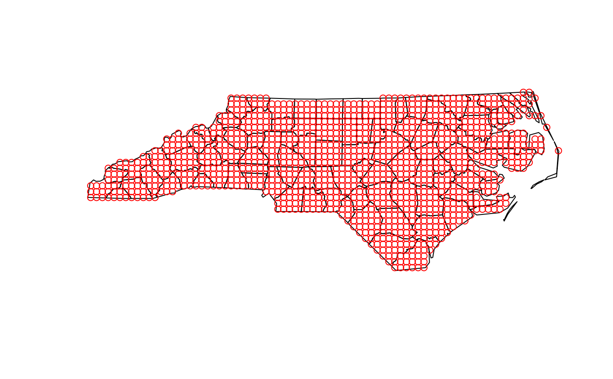

Generates regularly spaced point centres within a polygon boundary, or takes them from the cells of a raster, and retains the information needed to reconstruct their square grid cells.
Arguments
- boundaries
An object of class
sfcontaining POLYGONS or MULTIPOLYGONS within which the grid of points will be created. Optional whenrasteris supplied.- spacing
A single positive number specifying the distance between grid-point centres. Taken from the resolution of
rasterwhen that is supplied.- distance_units
Character string, either
"km"or"m", giving the units ofspacing. Defaults to"km".- keep
Which cells to keep.
"centre"(the default) keeps cells whose centre lies withinboundaries."overlap"keeps every cell that overlapsboundaries, including cells along the edge whose centre lies outside. Use"overlap"when totals over the study area matter, for example population counts along a coastline.- raster
Optional
SpatRasterfrom the terra package, in a projected coordinate reference system with square cells. When supplied, the grid consists of the raster's cells: their centres are the grid points and the raster's layers become columns of the grid.
Value
A RiskMap_grid and sf object containing the generated grid points. The
grid_metadata attribute records the spacing, units, cell size, cell area,
cell shape, grid CRS, alignment origin, the cells kept and the study
boundary. The grid_id column provides a stable identifier for each
retained cell centre. A grid built from raster also has one column for
each raster layer.
Details
This function returns point centres rather than polygon cells. The returned
object has class RiskMap_grid and carries lightweight metadata describing
the square cells. This allows other RiskMap functions to reconstruct their
footprints when exact cell coverage is needed without storing a second copy
of the grid as polygons. The metadata also records the study boundary, so
that maps can clip edge cells to it.
With keep = "overlap", cells along the edge extend beyond boundaries.
Areal predictions from predict.RiskMap() weight each cell by the fraction
lying within each polygon, so these cells contribute only their covered
part.
A grid built from raster is aligned with that raster by construction, so
its values need no extraction. This suits population counts: aggregate the
counts to the resolution of the grid with terra::aggregate() and
fun = "sum", after projecting them with terra::project() and
method = "sum" if needed, and use the result as raster. With
boundaries, cells are kept according to keep; without, the cells with
at least one non-missing value are kept. Cells kept inside boundaries
may have missing values, for example over water.
The CRS is inherited from boundaries, or from raster when it is
supplied. If boundaries is in longitude/latitude and no raster is given,
it is automatically reprojected to the CRS from propose_crs() and a
message names the CRS and the units of distance;
transform boundaries to a projected CRS yourself first to use a
different one. A warning of class riskmap_warning_crs is raised when the
CRS used distorts distances by more than 1% over boundaries, or over the
grid built from raster.
Examples
library(sf)
# Example boundary data
nc <- st_read(system.file("shape/nc.shp", package="sf"))
#> Reading layer `nc' from data source
#> `/home/runner/work/_temp/Library/sf/shape/nc.shp' using driver `ESRI Shapefile'
#> Simple feature collection with 100 features and 14 fields
#> Geometry type: MULTIPOLYGON
#> Dimension: XY
#> Bounding box: xmin: -84.32385 ymin: 33.88199 xmax: -75.45698 ymax: 36.58965
#> Geodetic CRS: NAD27
nc <- st_transform(nc, crs = 32617)
# Create grid with 10 km spacing
grid <- create_grid(nc, spacing = 10)
# Also keep the edge cells whose centre lies outside the boundary
grid_edges <- create_grid(nc, spacing = 10, keep = "overlap")
# Plot the grid
plot(st_geometry(nc))
plot(grid, add = TRUE, col = 'red')

# Use the cells of a 20 km raster, with its values as a column
cells <- terra::align(terra::ext(nc), 20000)
counts <- terra::rast(cells, resolution = 20000, crs = "EPSG:32617")
terra::values(counts) <- seq_len(terra::ncell(counts))
names(counts) <- "count"
grid_raster <- create_grid(nc, raster = counts)